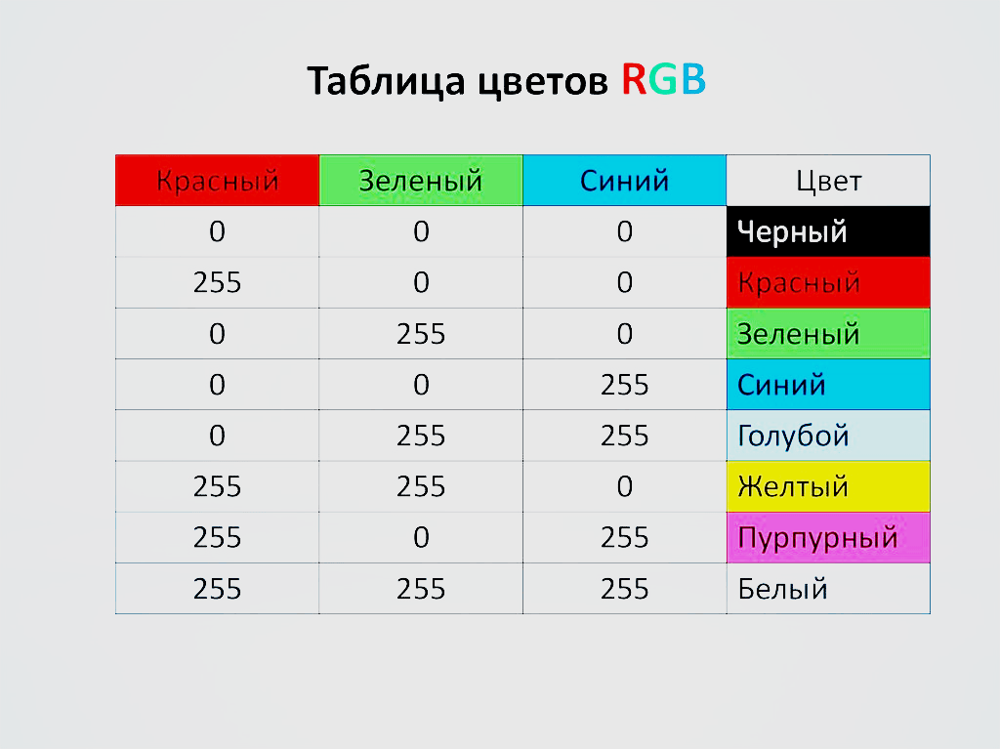

Библиотека Pygame / Часть 1. Введение
Это первая часть серии руководств «Разработка игр с помощью Pygame». Она предназначена для программистов начального и среднего уровней, которые заинтересованы в создании игр и улучшении собственных навыков кодирования на Python.
Код в уроках был написан на Python 3.7 и Pygame 1.9.6
Pygame — это «игровая библиотека», набор инструментов, помогающих программистам создавать игры. К ним относятся:
В сердце каждой игры лежит цикл, который принято называть «игровым циклом». Он запускается снова и снова, делая все, чтобы работала игра. Каждый цикл в игре называется кадром.
В каждом кадре происходит масса вещей, но их можно разбить на три категории:
Речь идет обо всем, что происходит вне игры — тех событиях, на которые она должна реагировать. Это могут быть нажатия клавиш на клавиатуре, клики мышью и так далее.
Изменение всего, что должно измениться в течение одного кадра. Если персонаж в воздухе, гравитация должна потянуть его вниз. Если два объекта встречаются на большой скорости, они должны взорваться.
В этом шаге все выводится на экран: фоны, персонажи, меню. Все, что игрок должен видеть, появляется на экране в нужном месте.
Время
Еще один важный аспект игрового цикла — скорость его работы. Многие наверняка знакомы с термином FPS, который расшифровывается как Frames Per Second (или кадры в секунду). Он указывает на то, сколько раз цикл должен повториться за одну секунду. Это важно, чтобы игра не была слишком медленной или быстрой. Важно и то, чтобы игра не работала с разной скоростью на разных ПК. Если персонажу необходимо 10 секунд на то, чтобы пересечь экран, эти 10 секунд должны быть неизменными для всех компьютеров.
Теперь, зная из каких элементов состоит игра, можно переходить к процессу написания кода. Начать стоит с создания простейшей программы pygame, которая всего лишь открывает окно и запускает игровой цикл. Это отправная точка для любого проекта pygame.
В начале программы нужно импортировать необходимые библиотеки и задать базовые переменные настроек игры:
# Pygame шаблон - скелет для нового проекта Pygame
import pygame
import random
WIDTH = 360 # ширина игрового окна
HEIGHT = 480 # высота игрового окна
FPS = 30 # частота кадров в секунду
Дальше необходимо открыть окно игры:
# создаем игру и окно
pygame.init()
pygame.mixer.init() # для звука
screen = pygame.display.set_mode((WIDTH, HEIGHT))
pygame.display.set_caption("My Game")
clock = pygame.time.Clock()
pygame.init() — это команда, которая запускает pygame. screen — окно программы, которое создается, когда мы задаем его размер в настройках. Дальше необходимо создать clock, чтобы убедиться, что игра работает с заданной частотой кадров.
Теперь необходимо создать игровой цикл:
# Цикл игры
running = True
while running:
# Ввод процесса (события)
# Обновление
# Визуализация (сборка)
Игровой цикл — это цикл while, контролируемый переменной running. Если нужно завершить игру, необходимо всего лишь поменять значение running на False. В результате цикл завершится. Теперь можно заполнить каждый раздел базовым кодом.
Начнем с раздела отрисовки. Персонажей пока нет, поэтому экран можно заполнить сплошным цветом. Чтобы сделать это, нужно разобраться, как компьютер обрабатывает цвета.
Экраны компьютеров сделаны из пикселей, каждый из которых содержит 3 элемента: красный, зеленый и синий. Цвет пикселя определяется тем, как горит каждый из элементов:

Каждый из трех основных цветов может иметь значение от 0 (выключен) до 255 (включен на 100%), так что для каждого элемента есть 256 вариантов.
Узнать общее количество отображаемых компьютером цветов можно, умножив:
>>> 256 * 256 * 256
16,777,216
Теперь, зная, как работают цвета, можно задать их в начале программ:
# Цвета (R, G, B)
BLACK = (0, 0, 0)
WHITE = (255, 255, 255)
RED = (255, 0, 0)
GREEN = (0, 255, 0)
BLUE = (0, 0, 255)
А после этого — заполнить весь экран.
# Рендеринг
screen.fill(BLACK)
Но этого недостаточно. Дисплей компьютера работает не так. Изменить пиксель — значит передать команду видеокарте, чтобы она передала соответствующую команду экрану. По компьютерным меркам это очень медленный процесс. Если нужно нарисовать на экране много всего, это займет много времени. Исправить это можно оригинальным способом, который называется — двойная буферизация. Звучит необычно, но вот что это такое.
Представьте, что у вас есть двусторонняя доска, которую можно поворачивать, показывая то одну, то вторую сторону. Одна будет дисплеем (то, что видит игрок), а вторая — оставаться скрытой, ее сможет «видеть» только компьютер. С каждым кадром рендеринг будет происходить на задней части доски. Когда отрисовка завершается, доска поворачивается и ее содержимое демонстрируется игроку.
А это значит, что процесс отрисовки происходит один раз за кадр, а не при добавлении каждого элемента.
В pygame это происходит автоматически. Нужно всего лишь сказать доске, чтобы она перевернулась, когда отрисовка завершена. Эта команда называется flip():
# Рендеринг
screen.fill(BLACK)
# после отрисовки всего, переворачиваем экран
pygame.display.flip()
Главное — сделать так, чтобы функция flip() была в конце. Если попытаться отрисовать что-то после поворота, это содержимое не отобразится на экране.
Игры еще нет, поэтому пока сложно сказать, какие кнопки или другие элементы управления понадобятся. Но нужно настроить одно важное событие. Если попытаться запустить программу сейчас, то станет понятно, что нет возможности закрыть окно. Нажать на крестик в верхнем углу недостаточно. Это тоже событие, и необходимо сообщить программе, чтобы она считала его и, соответственно, закрыла игру.
События происходят постоянно. Что, если игрок нажимает кнопку прыжка во время отрисовки? Это нельзя игнорировать, иначе игрок будет разочарован. Для этого pygame сохраняет все события, произошедшие с момента последнего кадра. Даже если игрок будет лупить по кнопкам, вы не пропустите ни одну из них. Создается список, и с помощью цикла for можно пройтись по всем из них.
for event in pygame.event.get():
# проверить закрытие окна
if event.type == pygame.QUIT:
running = False
В pygame много событий, на которые он способен реагировать. pygame.QUIT — событие, которое стартует после нажатия крестика и передает значение False переменной running, в результате чего игровой цикл заканчивается.
Пока что нечего поместить в раздел Update (обновление), но нужно убедиться, что настройка FPS контролирует скорость игры. Это можно сделать следующим образом:
while running:
# держим цикл на правильной скорости
clock.tick(FPS)
Команда tick() просит pygame определить, сколько занимает цикл, а затем сделать паузу, чтобы цикл (целый кадр) длился нужно время. Если задать значение FPS 30, это значит, что длина одного кадра — 1/30, то есть 0,03 секунды. Если цикл кода (обновление, рендеринг и прочее) занимает 0,01 секунды, тогда pygame сделает паузу на 0,02 секунды.
Наконец, нужно убедиться, что когда игровой цикл завершается, окно игры закрывается. Для этого нужно поместить функцию pygame.quit() в конце кода. Финальный шаблон pygame будет выглядеть вот так:
# Pygame шаблон - скелет для нового проекта Pygame
import pygame
import random
WIDTH = 360
HEIGHT = 480
FPS = 30
# Задаем цвета
WHITE = (255, 255, 255)
BLACK = (0, 0, 0)
RED = (255, 0, 0)
GREEN = (0, 255, 0)
BLUE = (0, 0, 255)
# Создаем игру и окно
pygame.init()
pygame.mixer.init()
screen = pygame.display.set_mode((WIDTH, HEIGHT))
pygame.display.set_caption("My Game")
clock = pygame.time.Clock()
# Цикл игры
running = True
while running:
# Держим цикл на правильной скорости
clock.tick(FPS)
# Ввод процесса (события)
for event in pygame.event.get():
# check for closing window
if event.type == pygame.QUIT:
running = False
# Обновление
# Рендеринг
screen.fill(BLACK)
# После отрисовки всего, переворачиваем экран
pygame.display.flip()
pygame.quit()
Ура! У вас есть рабочий шаблон Pygame. Сохраните его в файле с понятным названием, например, pygame_template.py, чтобы можно было использовать его каждый раз при создании нового проекта pygame.
В следующем руководстве этот шаблон будет использован как отправная точка для изучения процесса отрисовки объектов на экране и их движения.
Обучение с трудоустройство